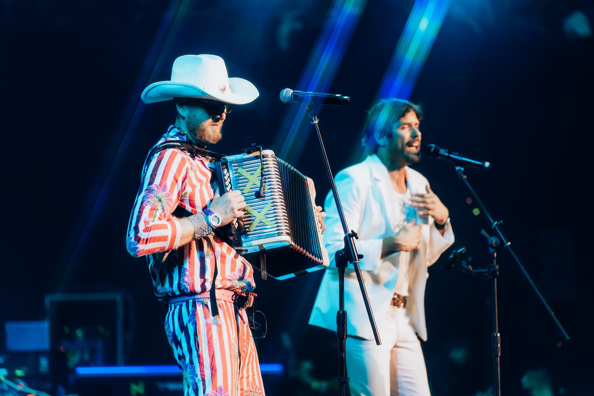
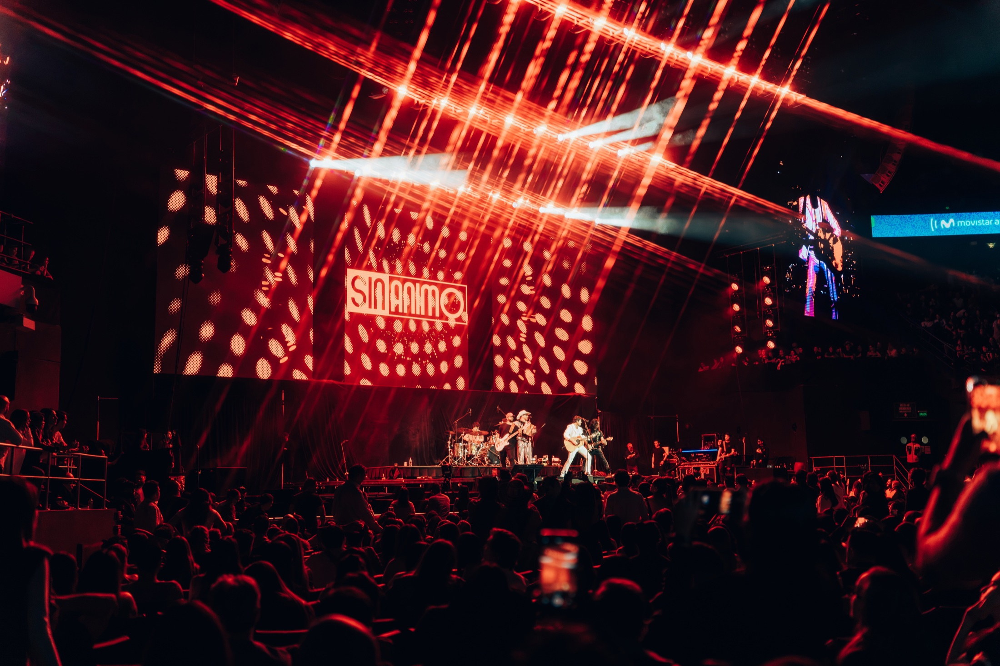

Sin Ánimo de Lucro · Show en vivo
Las canciones que han marcado una generación.
SADL en vivo
Sin Ánimo de Lucro
Sin Ánimo de Lucro en vivo.
Sin Ánimo de Lucro lleva al escenario las canciones que han marcado una época, con su mezcla de pop, rock y ritmos colombianos. Un show para cantar, bailar y celebrar.


El show
Duración1 hora
Propuesta económica
US$12.000USD
Valor neto, libre de retenciones e impuestos
50% · ReservaUS$6.000
Como mínimo un mes antes del show.
50% · SaldoUS$6.000
A más tardar una semana antes del show.
Fecha y lugar
Primer semestre de 2027, El Salvador.
Fecha por definir.
Artista
Sin Ánimo de Lucro
Producción
Rider y sonido profesional, tiquetes aéreos, traslados y hospedaje a cargo del contratante.